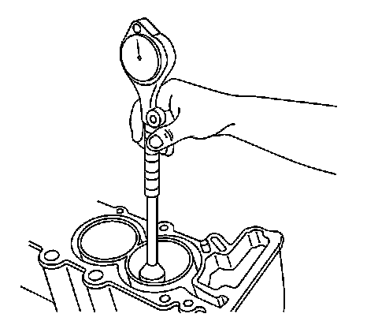

47. Engine Block Cleaning and Inspection - Upper
Engine Block Cleaning and Inspection - Upper
Tools Required
J 8087 Cylinder Bore Gage
Cleaning Procedure
1. Remove any old thread sealant and gasket material or sealant.
2. Clean all the following areas with solvent:
* Sealing surfaces
* Cooling passages
* Oil passages
* Bearing journals
3. Clean all threaded and through holes with solvent.
4. Prior to the application of RTV sealant GM P/N 12378521 (Canadian P/N 88901148) or equivalent to the engine block seal groove clean the groove and mating surfaces of the upper engine block and the mating surface of the lower crankcase with cleaner solvent GM P/N 12378392 or 12346139 (Canadian P/N 88901247).
Caution: Refer to Safety Glasses Caution (Safety Glasses Warning) .
5. Dry the upper engine block with compressed air.
Visual Inspection
1. Inspect the crankshaft bearing journals for damage or spun bearings. The crankshaft bearing journals are not repairable, if the crankshaft bearing journals are damaged the cylinder block assembly must be replaced.
2. Inspect the crankshaft rear oil seal bore for damage. The crankshaft rear oil seal bore is not repairable, if the crankshaft rear oil seal bore is damaged the cylinder block assembly must be replaced.
3. Inspect all sealing and mating surfaces for damage, repair or replace the cylinder block assembly if necessary.
4. Inspect all threaded and through holes for damage or excessive debris.
5. Inspect all bolts for damage, if damaged replace with new bolts only.
6. Inspect the cylinder walls for cracks or damage. The cylinders sleeves are not serviced separately, if the cylinders are damaged the cylinder block assembly must be replaced.
7. Inspect the upper engine block for cracks. Do not repair any cracks. If cracks are found, the cylinder block assembly must be replaced.
8. Repair any damaged threaded holes. Refer to Thread Repair Specifications (Specifications) and Thread Repair (Overhaul) .
Cylinder Bore Diameter Measurement Procedure

1. Measure the cylinder bore diameter at 41 mm (1.61 in) below the cylinder block deck surface using the J 8087 .
2. Compare the results with the engine mechanical specifications. If the cylinder diameter exceeds the specifications, the cylinder block must be replaced. There are no oversized pistons available for service. Refer to Engine Mechanical Specifications (Specifications) .
Deck Face Flatness Measurement Procedure
1. Place a straight edge across the deck face of the cylinder block at an angle starting at the front of the block and sloping downward to the rear of the block.
2. Measure the gap between the straight edge and cylinder block by sliding the feeler gages under the straight edge at the front, center and rear of the block. Insert the greatest thickness gage that will fit.
3. Find the difference between the largest and smallest measurement.
4. Change the position of the straight edge so that the angle travels up from the front of the block to the rear.
5. Measure the gap between the straight edge and the deck face again at the front, center and rear. Insert the greatest thickness gage that will fit.
6. Find the difference between the largest and smallest measurement.
7. Position the straight edge so it travels through the center of the cylinder bores.
8. Measure the gap between the straight edge and the deck face a final time at the front, center and rear. Insert the greatest thickness gage that will fit.
9. Find the difference between the largest and smallest measurement.
Important: If the flatness measurement exceeds the specifications, replace the cylinder block. Machining of the deck face surface is NOT allowed.
10. Compare your measurement to the engine mechanical specifications.
Cylinder Bore Taper Measurement Procedure
1. Measure the cylinder bore along the thrust surfaces at 5 mm (0.200 in) below the deck surface with the bore gage perpendicular to the crankshaft centerline and record the measurements.
2. Measure the cylinder bore along the thrust surfaces at 102 mm (4.000 in) below the deck surface with the bore gage perpendicular to the crankshaft centerline and record the measurements.
3. Calculate the difference between the two measurements. The result will be the cylinder taper.
4. Compare your results with the engine mechanical specifications. If the cylinders exceed these specifications, replace the cylinder block.
Cylinder Bore Out-of-Round Measurement Procedure
1. Measure both the thrust and non-thrust cylinder diameter 5 mm (0.20 in) below the deck surface using the J 8087 . Record your measurements.
2. Calculate the difference between the two measurements. The result will indicate out-of-round at the upper end of the cylinder.
3. Measure both the thrust and non-thrust cylinder diameter 102 mm (4.00 in) below the deck surface using the J 8087 . Record your measurements.
4. Calculate the difference between the two measurements. The result will indicate out-of-round at the lower end of the cylinder.
5. Compare your results with the engine mechanical specifications. If the cylinders exceed these specifications, replace the cylinder block.